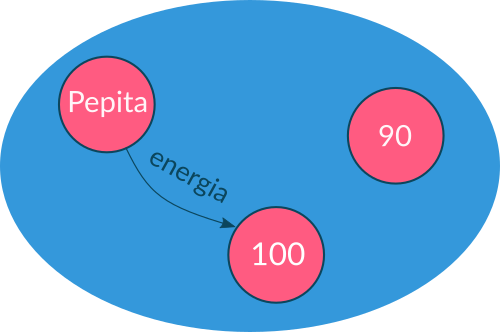

Apéndice
- El lenguaje Ruby
- Conceptos de programación con objetos
- Objeto
- Ambiente
- Envío de mensajes
- Definición de objetos
- Definición de métodos
- Interfaz
- Asignación
self- Responsabilidad y delegación
- Atributos
- Estado
- Accessors
- Encapsulamiento
- Convenciones para la nominación de métodos
- Alternativa Condicional
- Polimorfismo
- Referencias
- Colecciones
- Bloques de código
- Clases e instancias
- Herencia
- Redefinición
- Clases abstractas
super
- Operadores
- Métodos usuales
numero.absnumero.times bloquestring.upcasestring.sizenumero.even?objeto.equal? otro_objetocoleccion.push elementocoleccion.delete elementocoleccion.include? elementocoleccion.sizecoleccion.select bloque_con_condicioncoleccion.find bloque_con_condicioncoleccion.all? bloque_con_condicioncoleccion.map bloquecoleccion.count bloque_con_condicioncoleccion.sum bloquecoleccion.each bloqueClase.new
- Bibliografía complementaria
El lenguaje Ruby
Ruby es un lenguaje de Programación Orientada a Objetos gratis y de código abierto creado en Japón. Su sintaxis amigable lo hace muy popular sobre todo en el desarrollo web.
Conceptos de programación con objetos
Objeto y ambiente
A partir de la Lección 1: Objetos y mensajes
Los objetos son entes computacionales con los que interactuaremos para resolver problemas. Estos objetos "viven"en un ambiente:

En este ambiente podemos ver a los objetos Pepita, 90 y 100.
Envío de mensajes
A partir de la Lección 1: Objetos y mensajes
La manera de interactuar con los objetos es a través del envío de mensajes haciendo objeto.mensaje:
> Pepita.volar!
> Pepita.comer! 20
En este caso Pepita es el objeto al cual le enviamos:
- el mensaje
volar!que no recibe argumentos; - y el mensaje
comer!con el argumento20.
Definición de objetos
A partir de la Lección 2: Definiendo objetos: métodos y estado
La definición de objetos en Ruby comienza anteponiendo module antes del nombre y finaliza con end.
module Pepita
end
module Norita
end
Definición de métodos
A partir de la Lección 2: Definiendo objetos: métodos y estado
Para que un objeto entienda un mensaje es necesario crear un método dentro del mismo. La definición de los métodos comienzan con def y, al igual que en la declaración de objetos, finaliza con end. En el caso de los métodos creados dentro de un module es necesario anteponer al nombre self.. En caso que nuestro método reciba parámetros debemos ponerlos entre paréntesis separados por coma.
module Pepita
def self.cantar!
end
def self.volar!(distancia)
end
def self.comer!(cantidad, comida)
end
end
Interfaz
A partir de la Lección 1: Objetos y mensajes
Interfaz es el conjunto de mensajes que entiende un objeto. En el ejemplo anterior, la interfaz de Pepita está compuesta por los mensajes cantar!, volar! y comer!.
Asignación
A partir de la Lección 2: Definiendo objetos: métodos y estado
Para asignarle un valor a una variable utilizamos =.
numero_favorito = 8
color_favorito = "Violeta"
self
A partir de la Lección 2: Definiendo objetos: métodos y estado
Es la manera que tiene un objeto de enviarse mensajes a sí mismo; en estos casos self es el objeto receptor del mensaje.
module Gaby
@esta_alegre = false
def self.escuchar_musica!
@esta_alegre = true
self.bailar!
end
def self.bailar!
# No es importante esta definición
end
end
Responsabilidad y delegación
A partir de la Lección 2: Definiendo objetos: métodos y estado
La responsabilidad, en la programación con objetos, está relacionada con qué objeto debería resolver las determinadas partes de nuestro problema. Si un objeto no es responsable de hacer algo lo debe delegar en el correspondiente.
Atributos
A partir de la Lección 2: Definiendo objetos: métodos y estado
Los atributos son objetos que nos permiten representar una característica de otro objeto. Un objeto conoce a todos sus atributos por lo que puede enviarles mensajes. Los atributos se escriben anteponiendo @ y si bien no es necesario inicializarlos, hasta que no lo hagamos valdrán nil.
module Pepita
@energia = 100
def self.cantar!
end
def self.ciudad=(una_ciudad)
@ciudad = una_ciudad
end
def self.volar!(distancia)
@energia = @energia - distancia * 2
end
def self.comer!(cantidad, comida)
end
end
En este caso @energia es un atributo de Pepita que:
@energiatiene un valor inicial de100;- cuando
Pepitarecibe el mensajevolar!disminuye su@energiael doble de la distancia recorrida. @ciudadvalenilhasta que no le enviemos aPepitael mensajeciudad=con una ciudad como argumento.
Estado
A partir de la Lección 2: Definiendo objetos: métodos y estado
El estado de un objeto es el conjunto de atributos que posee. Todos los atributos son privados, para acceder o modificar los atributos de un objeto es necesario definir métodos dentro del mismo.
Accessors
A partir de la Lección 3: Polimorfismo y encapsulamiento
Los accessors son métodos que nos permiten acceder o modificar el estado de un objeto y son conocidos como getters y setters respectivamente.
module Pepita
@energia = 100
def self.energia
@energia
end
def self.energia=(nueva_energia)
@energia = nueva_energia
end
end
Encapsulamiento
A partir de la Lección 3: Polimorfismo y encapsulamiento
El encapsulamiento es la recomendable práctica de minimizar la exposición del estado de nuestros objetos. Para ello definiremos solo aquellos accessors que sean indispensables; tengamos en cuenta que no siempre vamos a querer definir getters y/o setters para todos los atributos de cada objeto. Veamos un ejemplo:
module AutoDeFabi
@patente = "AAA 111"
@nafta = 200
@color = "rojo"
def self.patente
@patente
end
def self.color=(un_color)
@color = un_color
end
def self.cargar!(cantidad)
@nafta += cantidad
end
end
module Fabi
def self.pintar_auto!(un_color)
AutoDeFabi.color = un_color
end
def self.cargar_nafta!(una_cantidad)
AutoDeFabi.cargar! una_cantidad
end
end
En este caso AutoDeFabi:
- tiene definido un getter para su atributo
@patente. Sin embargo, no define un setter ya que tiene sentido que pueda decir su patente pero que no se pueda modificar externamente; - tiene un setter para su atributo
@colorya que el objetoFabipuede modificarlo directamente; - no define ningún accessor para su atributo
@naftaya que en caso queFabidesee cargar nafta le enviará el mensajecargar!aAutoDeFabi.
Convenciones para la nominación de métodos
A partir de la Lección 2: Definiendo objetos: métodos y estado
A la hora de ponerle un nombre a los métodos que definimos hay que tener en cuenta ciertas convenciones de Ruby, es decir, algunos acuerdos entre la comunidad de personas que programan en este lenguaje:
- Los nombres de métodos que producen un cambio de estado deben finalizar con
!; - Los nombres de métodos que retornan un valor booleano deben finalizar con
?; - Los getters llevan el mismo nombre que el atributo que retornan pero sin el
@. - Los setters llevan el mismo nombre que el atributo que modifican, pero sin el
@y con=al final.
module Pepita
@energia = 100
def self.energia
@energia
end
def self.energia=(nueva_energia)
@energia = nueva_energia
end
def self.volar!(distancia)
@energia = @energia - distancia * 2
end
def self.cansada?
@energia < 10
end
end
Si bien nuestro código funcionará correctamente en caso de no respetar estas convenciones, será menos comprensible para otras personas que lo lean.
Alternativa Condicional
A partir de la Lección 3: Polimorfismo y encapsulamiento
La alternativa condicional en Ruby comienza con if seguido por la condición y termina con end:
if Pepita.aburrida?
Pepita.volar! 10
end
En caso de contar con un rama de else, end va al final del mismo:
if Norita.hambrienta?
Norita.comer! 10, "alpiste"
else
Norita.volar! 15
end
A diferencia de otros lenguajes, en Ruby podemos hacer elsif en caso de tener un if dentro de un else:
if Cleo.cansada?
Cleo.descansar!
elsif Cleo.aburrida?
Cleo.leer!
else
Cleo.trabajar!
end
Polimorfismo
A partir de la Lección 3: Polimorfismo y encapsulamiento
El polimorfismo en objetos es la capacidad que tiene un objeto de poder enviarle el mismo mensaje indistintamente a objetos diferentes. Estos objetos deben entender este mensaje más allá de cómo este definido el método asociado al mismo, es decir, dos o más objetos son polimórficos cuando comparten una interfaz. Para que estemos ante un caso de polimorfismo es necesaria la presencia de al menos tres objetos: uno que envíe el mensaje y dos distintos que puedan entenderlo. Veámoslo en un ejemplo:
Supongamos que Agus puede realizar llamadas por celular enviandole un mensaje llamar! con un parámetro minutos a su atributo @celular:
module Agus
def self.celular=(un_celular)
@celular = un_celular
end
def self.realizar_llamada!(minutos)
@celular.llamar! minutos
end
end
El celular que Agus utiliza puede ser tanto su CelularPersonal como su CelularLaboral:
module CelularPersonal
@saldo = 200
def self.llamar!(minutos)
@saldo -= minutos
end
end
module CelularLaboral
@minutos_consumidos = 0
def self.llamar!(minutos)
@minutos_consumidos += minutos
end
end
Gracias a que CelularPersonal y CelularLaboral son polimórficos para el mensaje llamar!, Agus puede realizar llamadas sin tener que verificar qué celular está utilizando.
Referencias
A partir de la Lección 4: Referencias
Cuando le enviamos un mensaje a un objeto, en realidad no lo conocemos directamente sino que lo hacemos a través de etiquetas llamadas referencias. Algunos ejemplos de referencias y envío de mensajes a través de las mismas son:
- las variables
dia = "domingo"
dia.upcase
- las referencias implícitas
"insomnio".upcase
^
+-- Acá hay una referencia implícita al objeto "insomnio"
- los objetos bien conocidos (los que declaramos con
module)
module Pepita
def self.cantar!
end
end
Pepita.cantar!
- los atributos
module Pepita
@ciudad = GeneralLasHeras
def self.coordenadas
@ciudad.coordenadas
end
end
- los parámetros
module Guille
@paginas_leidas = 0
def self.leer!(libro)
@paginas_leidas = @paginas_leidas + libro.cantidad_de_paginas
end
end
Colecciones
A partir de la Lección 5: Colecciones
Las colecciones son objetos que contienen referencias a otros objetos. Un tipo de colección son las listas, las cuales se escriben entre corchetes ([]) y permiten tener objetos repetidos con un orden determinado dentro de ellas:
> libros = [Fundacion, Socorro, Elevacion, Kriptonita, Socorro]
Otro tipo de colecciones muy común son los sets, los cuales a diferencia de las listas no pueden tener elementos repetidos y sus elementos no tienen un orden determinado:
> numeros_aleatorios = [1,27,8,7,8,27,87,1]
> numeros_aleatorios
=> [1,27,8,7,8,27,87,1]
> numeros_aleatorios.to_set
=> #<Set: {1, 27, 8, 7, 87}>
Bloques de código
A partir de la Lección 5: Colecciones
Los bloques son objetos que representan un mensaje o una secuencia de envíos de mensajes, sin ejecutar, lista para ser evaluada cuando corresponda.
> anio_actual = 2021
> anio_nuevo = proc { anio_actual = anio_actual + 1 }
Estos bloques de código pueden tomar parámetros escritos entre || separados por comas.
> saludador = proc { |saludo, nombre| saludo + " " + nombre + ", que lindo día para programar, ¿no?" }
Dentro de cada bloque podemos usar y enviarle mensajes tanto a los parámetros del bloque (saludo y nombre) como a las variables declaradas fuera del mismo (anio_actual).
Por último, para ejecutar el código dentro del bloque debemos enviarle el mensaje call con los argumentos correspondientes.
> anio_nuevo.call
=> 2022
> saludador.call("Hola", "Jor")
=> "Hola Jor, que lindo día para programar, ¿no?"
Clases e instancias
A partir de la Lección 6: Clases e Instancias
Las clases son objetos que sirven de moldes para crear nuevos objetos que tienen el mismo comportamiento.
Por ejemplo, si tuvieramos dos perros representados con los objetos Firulais y Stimpy:
module Firulais
@energia = 200
def self.jugar!(un_tiempo)
@energia -= un_tiempo
end
def self.recibir_duenio!
@energia += 100
end
end
module Stimpy
@energia = 300
def self.jugar!(un_tiempo)
@energia -= un_tiempo
end
def self.recibir_duenio!
@energia += 100
end
end
Podemos ver que tienen el mismo comportamiento. Para poder solucionar esta repetición podríamos crear la clase Perro:
class Perro
def initialize(energia)
@energia = energia
end
def jugar!(un_tiempo)
@energia -= un_tiempo
end
def recibir_duenio!
@energia += 100
end
end
El método initialize de las clases permite especificar cómo se inicializan las instancias de una clase. En este método declararemos los valores iniciales de los atributos. Por último para crear nuestros objetos debemos hacer:
firulais = Perro.new 200
stimpy = Perro.new 300
Estos nuevos objetos creados a partir de una clase (firulais y stimpy) son instancias de la misma. Es importante tener en cuenta que:
- Todo instancia pertenece a una y sólo una clase.
- No se puede cambiar la clase de una instancia en tiempo de ejecución.
Herencia
A partir de la Lección 7: Herencia
Cuando dos objetos repiten lógica, creamos una clase con el comportamiento en común. En el caso que dos clases repitan lógica deberíamos crear una nueva clase a la cual llamamos superclase. A esta nueva clase llevaremos los métodos repetidos y haremos que las clases originales hereden de ella. Estas subclases que heredan de la superclase solo contendrán su comportamiento particular.
Por ejemplo si tuvieramos:
class Gato
def initialize(energia)
@energia = energia
end
def jugar!(un_tiempo)
@energia -= un_tiempo
end
def recibir_duenio!
@energia -= 10
end
end
class Perro
def initialize(energia)
@energia = energia
end
def jugar!(un_tiempo)
@energia -= un_tiempo
end
def recibir_duenio!
@energia += 100
end
end
Podríamos crear la clase Mascota:
class Mascota
def initialize(energia)
@energia = energia
end
def jugar!(un_tiempo)
@energia -= un_tiempo
end
end
Por último es necesario hacer que las clases Gato y Perro hereden de Mascota utilizando <:
class Gato < Mascota
def recibir_duenio!
@energia -= 10
end
end
class Perro < Mascota
def recibir_duenio!
@energia += 100
end
end
En nuestra nueva jerarquía Mascota es una superclase de la cual heredan las subclases Gato y Perro.
Redefinición
A partir de la Lección 7: Herencia
La redefinición de métodos de una superclase nos permite modificar en las subclases el comportamiento definidio originalmente. Por ejemplo si en una subclase Gallina de Mascota quisieramos redefinir el método jugar! lo haríamos de esta forma:
class Gallina < Mascota
def jugar!(un_tiempo)
@energia -= 5
end
def recibir_duenio!
@energia *= 2
end
end
Clases abstractas
A partir de la Lección 7: Herencia
Las clases abstractas son clases que no se desea instanciar. Sirven para abstraer la lógica repetida de otras clases pero no las usaremos como molde de otros objetos. En contraposición, aquellas que sí instanciaremos son las llamadas clases concretas. En el ejemplo anterior Mascota es una clase abstracta mientras que Gato y Perro son clases concretas.
super
A partir de la Lección 7: Herencia
super nos permite redefinir un método pero sólo agregar una parte nueva a la funcionalidad, reutilizando la lógica común que está definida en la superclase. Al utilizar super en el método de una subclase, se evalúa el método con el mismo nombre de su superclase.
Por ejemplo:
class Pichicho < Perro
def recibir_duenio!
super
self.ladrar!
end
end
Operadores
Operadores matemáticos
A partir de la Lección 1: Objetos y mensajes
8 + 7
32 - 9
2 * 3
4 / 2
Operadores lógicos
A partir de la Lección 1: Objetos y mensajes
true && false
true || false
! false
Comparaciones
A partir de la Lección 1: Objetos y mensajes
Pepita == Norita
"ser" != "estar"
7 >= 5
7 > 5
7 <= 5
7 < 5
Metodos usuales
A lo largo del capítulo "Programación con Objetos" utilizamos algunos métodos en la resolución de ejercicios. A continuación te los listamos en el orden que aparecen.
numero.abs
A partir de la Lección 2: Definiendo objetos: métodos y estado
Permite obtener el valor absoluto de un número.
> 8.abs
=> 8
> (-8).abs
=> 8
> (3 - 7).abs
=> 4
numero.times bloque
A partir de la Lección 3: Polimorfismo y encapsulamiento
Ejecuta el código del
bloquetantas veces como diganumero.
> Pepita.energia = 5
> 3.times { Pepita.energia = Pepita.energia * 2 }
> Pepita.energia
=> 40
string.upcase
A partir de la Lección 4: Referencias
Retorna un nuevo string con todos los caracteres de
stringen mayúsculas.
> "libro".upcase
=> "LIBRO"
string.size
A partir de la Lección 4: Referencias
Retorna la cantidad de caracteres de
string.
> "camino".size
=> 6
numero.even?
Nos permite saber si
numeroes par.
> 8.even?
=> true
> 7.even?
=> false
objeto.equal? otro_objeto
A partir de la Lección 4: Referencias
Nos permite saber si
objetoyotro_objetoson referencias que apuntan a exactamente el mismo objeto.
> un_string = "lamparita"
> otro_string = un_string
> un_string.equal? "lamparita"
=> false
> un_string.equal? otro_string
=> true
coleccion.push elemento
A partir de la Lección 5: Colecciones
Agrega
elementoacoleccion.
> numeros_de_la_suerte = [8, 7, 42]
> numeros_de_la_suerte.push 9
> numeros_de_la_suerte
=> [8, 7, 42, 9]
coleccion.delete elemento
A partir de la Lección 5: Colecciones
Remueve
elementodecoleccion.
> numeros_de_la_suerte = [8, 7, 42]
> numeros_de_la_suerte.delete 7
> numeros_de_la_suerte
=> [8, 42]
coleccion.include? elemento
A partir de la Lección 5: Colecciones
Nos permite saber si
elementopertenece acoleccion.
> [25, 87, 776].include? 8
=> true
> [25, 87, 776].include? 9
=> false
coleccion.size
A partir de la Lección 5: Colecciones
Retorna la cantidad de elementos dentro de
coleccion.
> ["hola", "todo", "bien", "por", "acá"].size
=> 5
coleccion.select bloque_con_condicion
A partir de la Lección 5: Colecciones
Retorna una nueva colección con los elementos de
coleccionque cumplan con la condición debloque_con_condicion. Este método no tiene efecto sobrecoleccion.
> [1, 2, 3, 5, 7, 11, 13].select { |un_numero| un_numero > 5 }
=> [7, 11, 13]
coleccion.find bloque_con_condicion
A partir de la Lección 5: Colecciones
Retorna el primer el elemento de
coleccionque cumpla con la condición debloque_con_condicion. Si ningún elemento cumple la condición nos devuelvenil.
> [1, 2, 3, 5, 7, 11, 13].find { |un_numero| un_numero > 15 }
=> nil
coleccion.all? bloque_con_condicion
A partir de la Lección 5: Colecciones
Nos permite saber si todos los elementos de
coleccioncumplen con la condición debloque_con_condicion.
> [1, 2, 3, 5, 7, 11, 13].all? { |un_numero| un_numero > 5 }
=> false
> [1, 2, 3, 5, 7, 11, 13].all? { |un_numero| un_numero < 20 }
=> true
coleccion.map bloque
A partir de la Lección 5: Colecciones
Retorna una nueva colección con el resultado de ejecutar el código de
bloquepor cada elemento decoleccion.
> [1, 2, 3, 4, 5].map { |un_numero| un_numero * 2 }
=> [2, 4, 6, 8, 10]
coleccion.count bloque_con_condicion
A partir de la Lección 5: Colecciones
Retorna cuántos elementos de
coleccioncumplen con la condición debloque_con_condicion.
> [1, 2, 3, 5, 7, 11, 13].count { |un_numero| un_numero > 3 }
=> 4
coleccion.sum bloque
A partir de la Lección 5: Colecciones
Retorna la suma de los valores obtenidos al ejecutar el código de
bloqueen cada elemento decoleccion.
> juegos_de_mesa = [Ajedrez, Damas, Ludo]
> juegos_de_mesa.sum { |un_juego| un_juego.cantidad_de_piezas }
=> 60 # 32 del ajedrez + 24 de las damas + 4 del ludo
coleccion.each bloque
A partir de la Lección 5: Colecciones
Ejecuta el código de bloque por cada elemento de
coleccion. El métodoeachno retorna una nueva colección sino que tiene efecto sobre la original.
> golondrinas = [Pepita, Norita, Mercedes]
> golondrinas.each { |una_golondrina| una_golondrina.comer_lombriz! } # Hace que cada golondrina de la colección coma lombriz.
Clase.new
A partir de la Lección 6: Clases e Instancias
Crea y retorna una nueva instancia de
Clase.
> guitarra = Instrumento.new
> piano = Instrumento.new